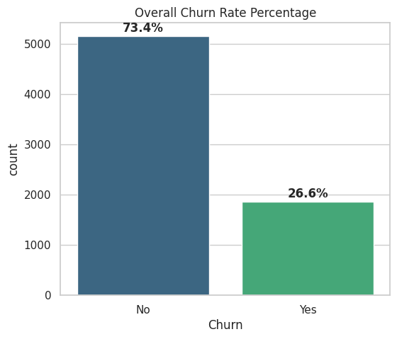

overview
An end-to-end Python analysis identifying key customer churn drivers for a telecom provider and translating the findings into actionable business recommendations.

problem
A telecom provider needed to understand which factors were driving customer churn in order to act on them.
approach
Exploratory and statistical analysis in Python to surface the strongest churn drivers, followed by translating findings into business recommendations.
data
technical work
Built with Python, Pandas, and NumPy for data analysis and exploratory data analysis techniques to surface patterns in churn behavior.
results / insights
Of the analyzed customer base, 26.6% had churned against 73.4% retained — establishing the baseline churn rate the driver analysis and recommendations were built against.
business value
Findings were translated into actionable business recommendations aimed at reducing churn.
technologies
links